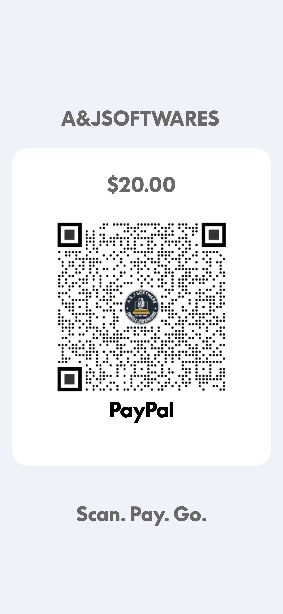

💾
Windows 11 Pro Recovery USB
$39.99
RecoverRestoreRepairInstall
USB de recuperación e instalación para Windows 11 Pro.
Windows 11 Pro recovery and installation USB.
Windows, soporte para computadoras, publicidad digital, documentos, Excel e IPTV setup.

Herramienta bilingüe para diagnóstico y mantenimiento de Windows.
Bilingual Windows diagnostics and maintenance toolkit.
Comprar / Buy
Soporte en inglés y español • English and Spanish support
USB de recuperación e instalación para Windows 11 Pro.
Windows 11 Pro recovery and installation USB.
Recuperación o restablecimiento autorizado de contraseñas en equipos propios o con permiso.
Authorized password recovery/reset for computers you own or have permission to service.
Diagnóstico y mantenimiento de Windows.
Bilingual Windows diagnostics and maintenance toolkit.
Instalación, configuración y soporte de aplicaciones IPTV para servicios y contenido autorizado.
IPTV app installation, setup and support for authorized services and content.
Elija el nivel de servicio que necesita. Todos los precios y el alcance del trabajo se explican antes de comenzar.
Choose the service level you need. Pricing and scope are explained before work begins.
Diagnóstico de software solamente / Software diagnostic only.
Repair is not included / La reparación no está incluida.
Diagnóstico + reparación de un problema estándar de software.
Problemas complejos, múltiples fallas, reset o reinstalación de Windows no están incluidos. Si se requiere trabajo adicional, se informa primero.
Servicio completo para problemas de software de Windows 10/11.
Trabajamos el problema de software hasta recuperar el funcionamiento de Windows cuando sea técnicamente reparable por software. Si la causa resulta ser hardware, se informa al cliente.
RESPALDO REQUERIDO / BACKUP REQUIRED: Antes de entregar su computadora o autorizar el servicio, el cliente debe crear y verificar una copia de seguridad de todos sus archivos importantes, incluyendo fotos, videos, documentos y demás información personal que desee conservar.
Algunas reparaciones pueden requerir restablecer o reinstalar Windows. Estos procedimientos pueden eliminar aplicaciones, configuraciones y, dependiendo del procedimiento necesario, datos almacenados en el equipo.
A&J Digital Services no incluye respaldo de datos en estos servicios. Si necesita ayuda con un respaldo, debe informarlo antes de autorizar cualquier reset o reinstalación para determinar si podemos ofrecerlo como servicio separado.
NO AUTORICE UN RESET O REINSTALACIÓN DE WINDOWS HASTA CONFIRMAR QUE SUS ARCHIVOS IMPORTANTES ESTÁN RESPALDADOS.
English: Before service, the customer must create and verify a backup of all important photos, videos, documents and personal files. Some repairs may require a Windows reset or reinstallation. Do not authorize a reset or Windows reinstallation until you have confirmed that your important files are safely backed up.
Software only: Hardware repairs, physical parts, paid software licenses and advanced data recovery are not included.
Servicio separado para una impresora + una computadora Windows 10/11.
Revisión y reparación de problemas de software de impresión, incluyendo drivers desinstalados o dañados, instalación/reinstalación del driver, configuración de impresora, errores Offline, Print Spooler y otros problemas de impresión causados por software.
Separate service for one printer + one Windows 10/11 computer. Includes printer driver installation/reinstallation, software configuration, offline errors and Windows printing issues.
Software only — no printer hardware repair or physical parts.
Logos, flyers, tarjetas digitales y QR.
Facturas, presupuestos, contratos y formularios.
Inventarios, PAR, horarios, gastos y tablas.
Windows, configuración, mantenimiento y diagnóstico.
Inventarios, preparación, recetas y formatos.
Servicio y soporte bilingüe.
Aceptamos / We Accept
Envía tu comprobante por WhatsApp después del pago.
Send your payment receipt through WhatsApp.